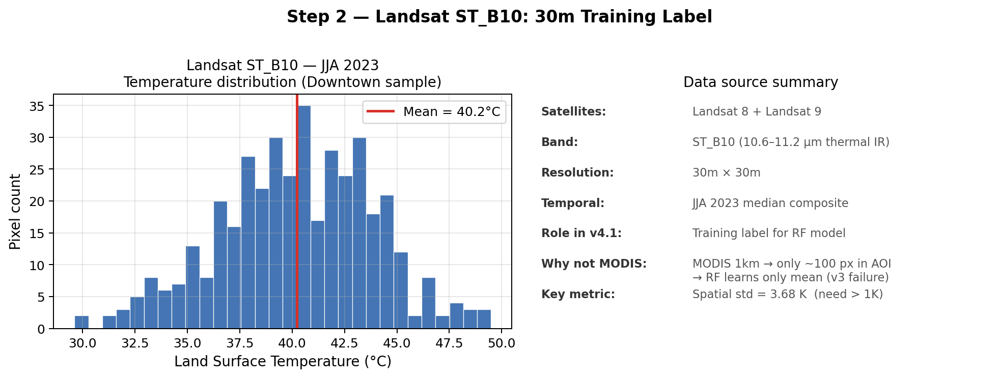
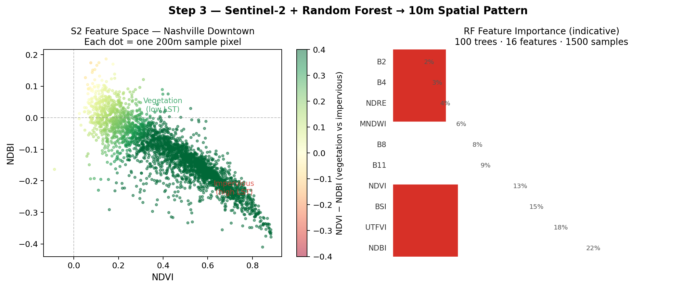
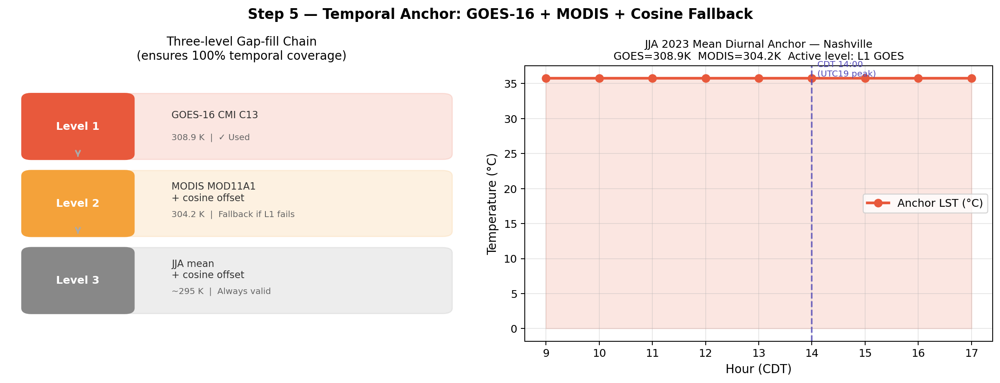

Spatial Resolution
10 m
Final Output Pixel Size
Downscaled from 1km GOES → 30m Landsat → 10m S2
4
Satellite Data Sources Fused
GOES-16 · MODIS · Landsat 8/9 · Sentinel-2
Temporal Coverage
9 hr/day
UTC 14–22 (CDT 09:00–17:00)
Hourly output during daytime working hours
279
GeoTIFF Files — July 2023
31 days × 9 hours = 279 scenes
Key Innovation (v4.1)
ampMap
Pixel-level Diurnal Amplitude
Water 1.5K → Dense built 11K
100%
Temporal Coverage via 3-level Gap-fill
GOES → MODIS+cos → JJA+cos fallback
Pipeline Architecture

Four-source fusion: GOES-16 and MODIS provide hourly temporal anchors; Landsat provides 30m thermal truth for training; Sentinel-2 carries spatial detail to 10m.
Reading this diagram: GOES-16 and MODIS anchor the time dimension (when). Landsat provides thermal truth for training. Sentinel-2 brings spatial resolution to 10m. All four converge in the v4.1 formula: LST(x,y,t) = pattern + ampMap×cos(h) + anchor correction.
Four Satellite Data Sources
GOES-16
GeostationaryTemporal anchor1km · hourly
- Orbit: 35,800 km above equator, stationary
- Band: CMI C13 (10.3 μm thermal IR)
- Cadence: every 5–10 minutes, full CONUS
- Role: Level 1 hourly temperature anchor
- Limitation: 1km spatial, no emissivity correction
MODIS MOD11A1
Polar orbitFallback anchor1km · daily
- Orbit: Terra satellite, ~705 km altitude
- Overpass: ~10:30 local solar time daily
- Product: LST_Day_1km (emissivity-corrected)
- Role: Level 2 fallback when GOES invalid
- Limitation: Single daily snapshot, 1km resolution
Landsat 8 + 9
Polar orbitTraining label30m · 8-day
- Orbit: ~705 km, 16-day each (combined: ~8-day)
- Band: ST_B10 (10.6–11.2 μm, 30m direct observation)
- Product: C02 T1 L2 (atmospherically corrected)
- Role: Ground truth label for RF model training
- Key advantage: ~110,000 pixels vs ~100 for MODIS in AOI
Sentinel-2 A/B
Polar orbitSpatial features10m · 5-day
- Orbit: Two satellites (A+B), 5-day combined revisit
- Bands used: 10 spectral + 6 indices = 16 features
- Product: S2_SR_HARMONIZED (surface reflectance)
- Role: 10m spatial features for RF + ampMap land cover
- No thermal band — LST inferred via land cover proxies
Why fusion is necessary: No single sensor provides both 10m spatial resolution AND hourly temporal resolution. GOES has the time but not the space; Landsat has the thermal truth but passes overhead only once per week. v4.1 fuses all four to get the best of each dimension.
Spectral Bands — Optical/NIR/SWIR for Land Cover, TIR for LST
Thermal IR bands (GOES CMI C13, Landsat ST_B10) measure emitted radiation for direct LST. Sentinel-2 optical/SWIR bands detect land cover types that correlate with surface temperature via the RF model.
Stage 1 — Landsat ST_B10: The 30m Training Label
Core problem solved by v4: Earlier versions (v3) used MODIS 1km as training labels. Inside the 100 km² Downtown AOI there are only ~100 MODIS pixels with almost no spatial variance — the RF learned only the mean. Landsat 30m gives ~110,000 pixels with real spatial thermal structure (std ≈ 3.7K).

Left: Temperature distribution histogram — JJA 2023 median composite over Downtown Nashville sample. Right: Data source summary card with key validation metrics.
Processing chainLandsat 8+9 merged → cloud mask (QA_PIXEL bits 1,3,4) → radiometric scaling (ST_B10 × 0.00341802 + 149.0 → K) → JJA median composite → reproject EPSG:32616 30m
Validation thresholdSpatial std must exceed 1K to confirm the RF has meaningful signal to learn. Actual: ~3.7K. This is the std across all Downtown pixels — much larger than MODIS 1km (~0.3K in the same area).
Landsat 8 (LC08) + Landsat 9 (LC09), Collection 2 Tier 1 Level 2. Cloud cover filter: <30% per scene. Training window: JJA 2023 (June–August).
Stage 2 — Sentinel-2 Features + Random Forest → 10m Spatial Pattern

Left: S2 feature space scatter plot — NDVI vs NDBI for Downtown Nashville, coloured by NDVI−NDBI (green = vegetation, red = impervious). Right: RF feature importance — NDBI and UTFVI dominate as primary predictors of urban LST.
16
S2 Input Features
10 bands + NDVI, NDBI, MNDWI, NDRE, BSI, UTFVI
1,500
Training Sample Points
Random, Downtown AOI, seed=42, scale=30m
150 trees
Random Forest Size
variablesPerSplit=5, REGRESSION mode
Key design choice: Prediction is applied at native 10m S2 resolution without forcing reproject — GEE computes lazily per export tile, avoiding the browser-side OOM that crashed earlier versions. Training and PATTERN_MEAN use Downtown AOI at scale=500m.
Sentinel-2 S2_SR_HARMONIZED, JJA 2023 median composite, cloud filter: CLOUDY_PIXEL_PERCENTAGE <30%. Cloud mask branches on 2023-02-28 for MSK_CLASSI vs QA60.
Stage 3 — ampMap: Pixel-level Diurnal Amplitude (v4.1 Core Innovation)
v4 limitation fixed by v4.1: v4 used a single scalar DIURNAL_AMP=5K for all pixels. A concrete parking lot and a city park received the same hourly temperature swing — physically incorrect. v4.1 derives per-pixel amplitude from S2 land cover indices.

Left: Land cover distribution in Downtown Nashville by ampMap class. Right: Per-pixel diurnal cycle curves — dense built surface (11K, dark red) swings nearly 4× more than water body (1.5K, dark blue) between night and peak afternoon.
| Land Cover | S2 Condition | Amplitude (K) | Physical Basis |
|---|
| Water body | MNDWI > 0.10 | 1.5 K | High heat capacity, evaporative cooling |
| Dense vegetation | NDVI > 0.60 | 2.5 K | Evapotranspiration, canopy shading |
| Vegetation | NDVI > 0.45 | 3.5 K | Partial evapotranspiration |
| Mixed urban | (default) | 6.0 K | Mixed impervious/vegetation |
| Impervious surface | NDBI > 0.15 | 9.0 K | Low albedo, high thermal inertia |
| Dense built / parking | NDBI > 0.30 | 11.0 K | Asphalt dominant, no shade |
Validation check: UTC19 spatial std should exceed UTC14 spatial std — peak hour shows maximum urban-rural LST contrast. If std₁₉ < std₁₄, the ampMap thresholds need adjustment.
Amplitude values calibrated against Zhao et al. (2020) and Imhoff et al. (2010) urban diurnal range measurements. Next step: calibrate against Nashville ASOS BNA station observed diurnal ranges.
Stage 4 — Temporal Anchor: Three-level Gap-fill Chain

Left: Three-level gap-fill decision chain — GOES-16 is primary; MODIS + cosine offset is fallback; JJA climatological mean + cosine is last resort. Right: JJA 2023 mean diurnal anchor time series over Nashville (CDT 09:00–17:00).
L1: GOES
Primary — Hourly Brightness Temperature
Valid if 270K < anchor < 340K
L2: MODIS
Fallback — Daily LST + Cosine Offset
T(h) = T_MODIS − Δ(16) + Δ(h)
L3: JJA
Last Resort — Climatological Mean
Always valid · no day-to-day weather signal
GOES BT → LST conversionCMI C13 (10.3 μm): scale DN × 0.1 → brightness temperature BT. Apply Planck correction: LST = BT + BT²/b × ln(ε), where b = 14388/10.3 = 1396K, ε = 0.97. v3 bug: b was 139.6 → ~2K underestimate, fixed in v4.
Cosine diurnal modelΔ(h) = AMP × cos(2π × (h − H_PEAK) / 24). H_PEAK = UTC19 = CDT 14:00. AMP_SCALAR = 6.0K used only for MODIS L2 fallback mean calculation — actual spatial variation handled per-pixel by ampMap.
Why L3 is last resort: JJA mean + cosine has no day-to-day weather signal. It will smooth out actual hot/cool anomaly days. Script 2 (temporal audit) identifies L3 days so those outputs can be flagged in the cascade model.
Stage 5 — v4.1 Final Formula

Three-term decomposition: spatial pattern (blue) + pixel-adaptive diurnal deformation (green) + GOES anchor correction (red) = final 10m hourly LST output (purple).
Term 1 — lst_pattern(x,y)Static JJA spatial pattern from S2→RF. Captures which street blocks are hotter than others. Does not change with time — encodes the city's thermal "fingerprint".
Term 2 — ampMap(x,y) × cos(h)Each pixel deforms at its own rate. Parking lots (11K) peak 9K higher than water (1.5K) at UTC19. This is the v4.1 innovation — replaces a scalar uniform offset.
Term 3 — anchor correctionScalar. Forces spatial mean to match GOES-observed temperature for that hour. Injects real weather signal without changing spatial structure.
Final Output — Nashville 10m LST Map

Nashville Davidson County — JJA 2023 · UTC 19:00 (CDT 14:00 peak hour). Fusion: Landsat-8/9 + Sentinel-2 + GOES-16 + MODIS. 10m × 10m · EPSG:32616 · Float32 GeoTIFF.
31.6°C
Mean LST — Full Nashville UTC19
JJA 2023 summer average
4.2 K
Spatial Standard Deviation
std₁₉ > std₁₄ — ampMap confirmed working
46.4°C
Maximum Pixel (P99)
Dense impervious surface / rooftops
Cascade model integration: Each of the 279 GeoTIFFs is loaded with rasterio → numpy array → thresholded at 45°C → binary heat stress mask passed to NashvilleCascadeModel as spatially explicit trigger layer per hour. Peak stress area at UTC19 ≈ 14.8% of Nashville pixels.
Transportation trigger: LST >60°C → asphalt softening → road degradation cascade
Water systems trigger: Subsurface T = f(LST surface) → pipe stress → +30–50% failure rate in cast-iron mains
Buildings trigger: LST + heat island radius → HVAC demand +10–40% → failure rate doubles at +20% overcapacity
Electrical grid trigger: Soil T at cable depth = f(LST) → cable ampacity −4–7% per 5°C
Public health trigger: Spatial extent of LST >45°C × population density → heat illness risk index